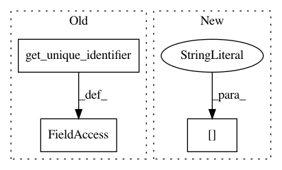

60362d5ba23d828cc25412014ad95aefd1ee1926,pyannote/audio/pipeline/speaker_change_detection.py,SpeakerChangeDetection,__call__,#SpeakerChangeDetection#Any#,84
Before Change
// peak detection
change = self._peak.apply(change_prob)
change.uri = get_unique_identifier(current_file)
return change.to_annotation(generator="string", modality="audio")
def loss(self, current_file: dict, hypothesis: Annotation) -> float:
After Change
// peak detection
change = self._peak.apply(change_prob)
change.uri = current_file["uri"]
return change.to_annotation(generator="string", modality="audio")
def loss(self, current_file: dict, hypothesis: Annotation) -> float:
In pattern: SUPERPATTERN
Frequency: 3
Non-data size: 3
Instances
Project Name: pyannote/pyannote-audio
Commit Name: 60362d5ba23d828cc25412014ad95aefd1ee1926
Time: 2019-07-11
Author: bredin@limsi.fr
File Name: pyannote/audio/pipeline/speaker_change_detection.py
Class Name: SpeakerChangeDetection
Method Name: __call__
Project Name: pyannote/pyannote-audio
Commit Name: 60362d5ba23d828cc25412014ad95aefd1ee1926
Time: 2019-07-11
Author: bredin@limsi.fr
File Name: pyannote/audio/pipeline/overlap_detection.py
Class Name: OverlapDetection
Method Name: __call__
Project Name: pyannote/pyannote-audio
Commit Name: 60362d5ba23d828cc25412014ad95aefd1ee1926
Time: 2019-07-11
Author: bredin@limsi.fr
File Name: pyannote/audio/pipeline/speech_activity_detection.py
Class Name: SpeechActivityDetection
Method Name: __call__